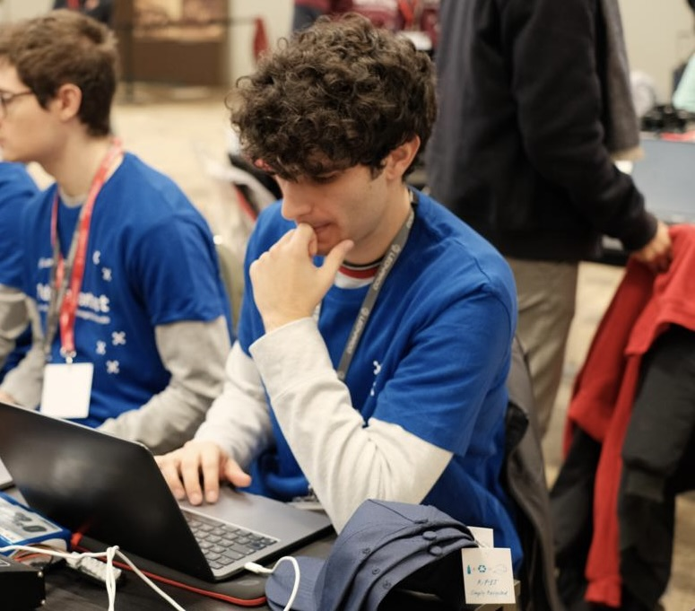
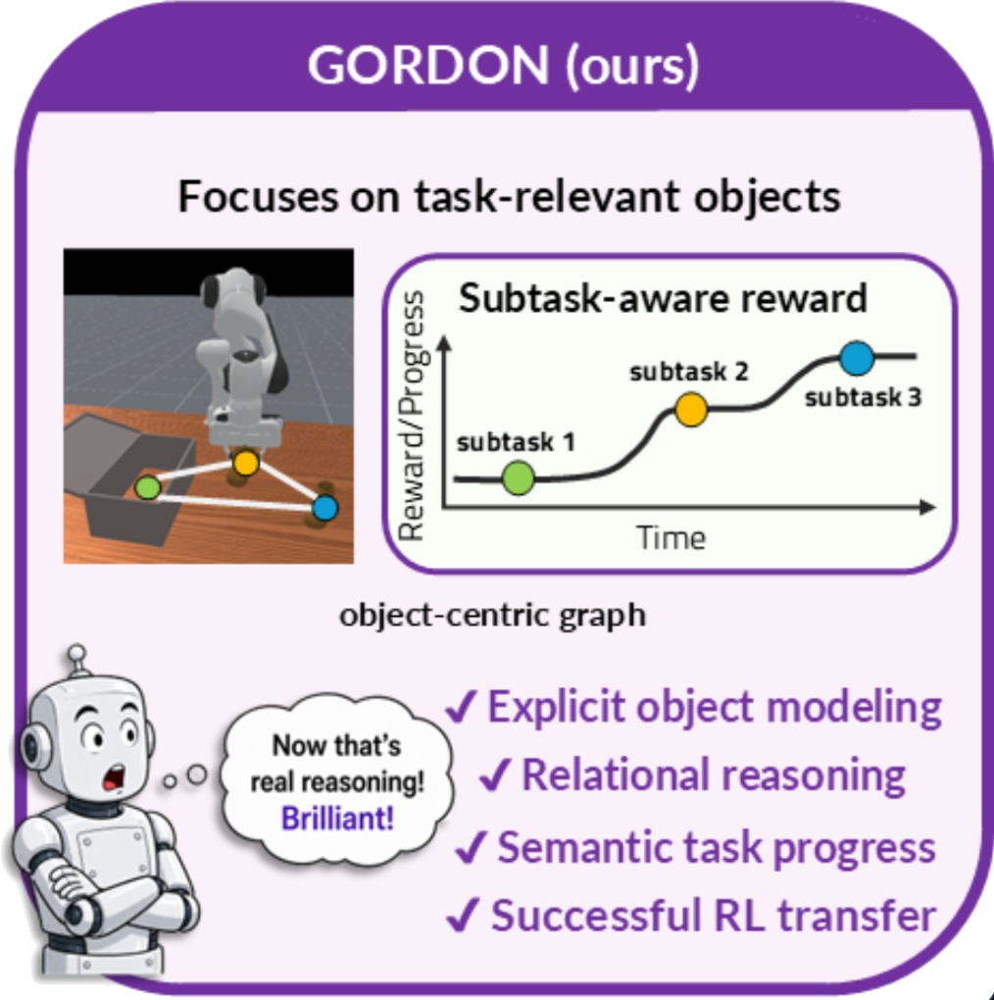
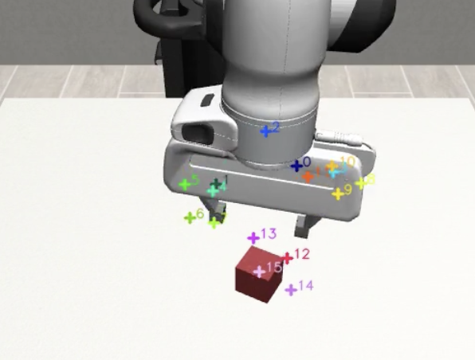
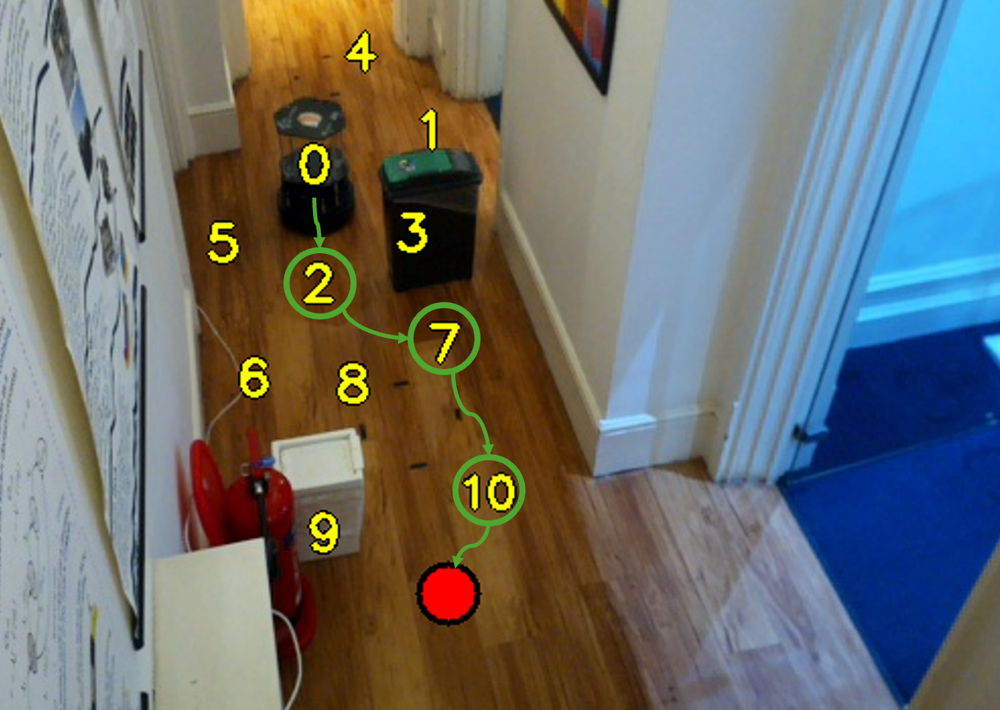
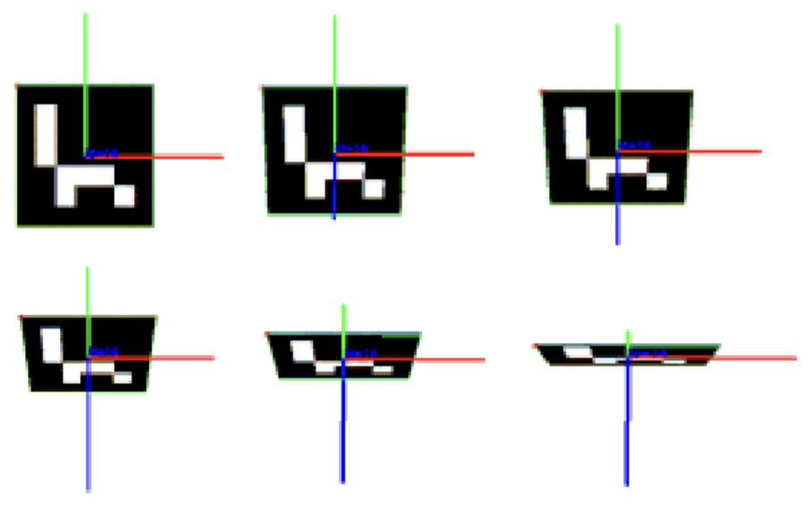

Polytechnic University of Turin
Davide Buoso
PhD student, VANDAL

I am now a PhD student at VANDAL, Polytechnic University of Turin, where I am lucky to be supervised by Prof. Giuseppe Averta.
News
-
Attended IROS 2026 in Pittsburgh.
-
Attended the International Computer Vision Summer School (ICVSS).
-
Attended ICRA 2026.
-
Participated in the Venice Biennale and presented the Robotic Bartender project with researchers from Daniela Rus’s group.
-
Started a PhD at VANDAL, Polytechnic University of Turin.
-
Finished a visiting stay with the Torr Vision Group and the Oxford Robotics Institute.
-
Joined the Torr Vision Group and the Oxford Robotics Institute as a visiting student.
Research
-
Imitation learning for manipulation
Acquisition and aggregation of skills for autonomous robots.
-
Generative models for robots
Language, vision-language, and diffusion models for perception, planning, and reasoning.
-
Efficient perception
Representations that stay useful when data and compute are limited.
Publications
-

2026
GORDON: Graph-based Object-centric Rewards for Decomposition of Long-Horizon Manipulation
arXiv, under review
Object-centric graph rewards learned from action-free videos, used to split long-horizon manipulation into subtasks without manual segmentation.
-

2026
GAP: Geometric Anchor Pre-Training for Data-Efficient Visuomotor Learning of Manipulation Tasks
IEEE/RSJ International Conference on Intelligent Robots and Systems (IROS)
A short, action-free warm-up that teaches a spatial adapter to lock onto object geometry, so a frozen vision model can learn manipulation from very few demonstrations.
-

2025
Select2Plan: Training-Free ICL-Based Planning through VQA and Memory Retrieval
IEEE Robotics and Automation Letters (RA-L)
High-level robot planning with an off-the-shelf vision-language model, structured visual questions, and a handful of in-context examples. No task-specific fine-tuning.
-

2024
Enhanced Localization of ArUco Markers for Autonomous Robotics: A Comparative Study
European Robotics Forum (ERF)
Course projects
Teaching activities
Teaching collaborator at Polytechnic University of Turin.
-
Robot Learning, MSc Computer Engineering.
-
Programming Techniques, BSc Management Engineering.
-
Fundamentals of Artificial Intelligence, Machine and Deep Learning, MSc Data Science and Engineering.
-
Machine Learning and Deep Learning, MSc Data Science and Engineering.
-
Machine Learning for Mathematical Engineering, MSc Mathematical Engineering.